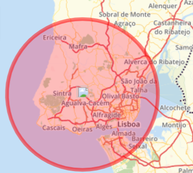
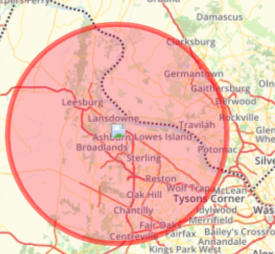
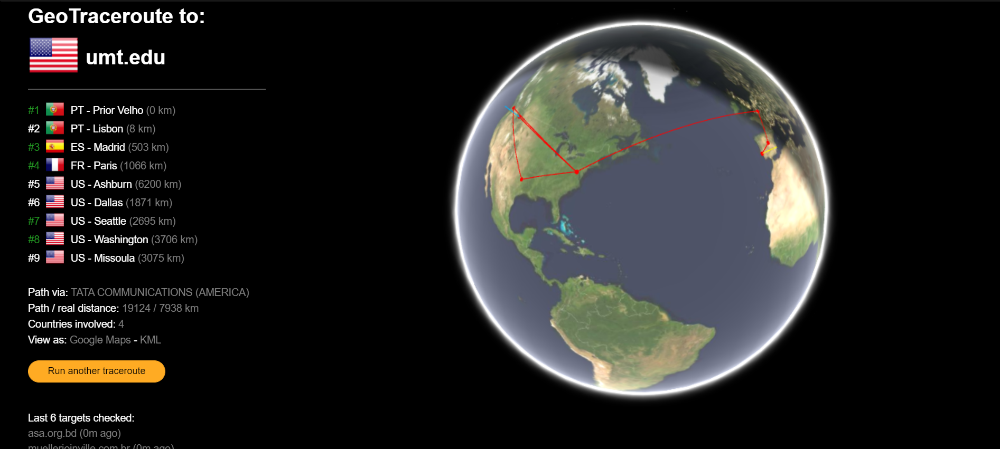
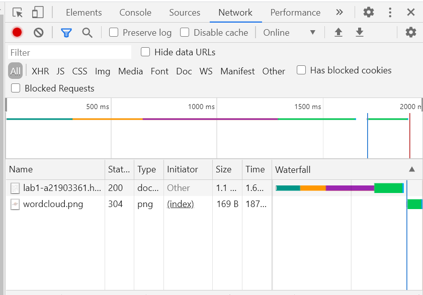
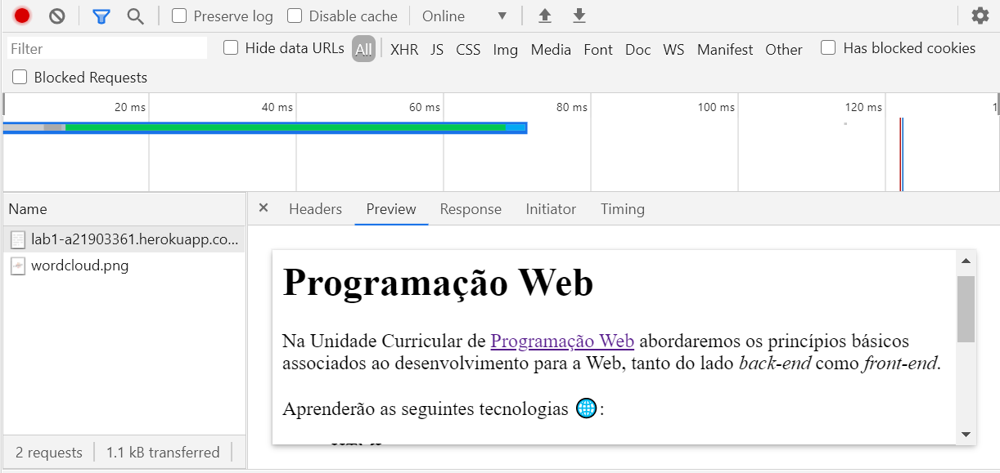
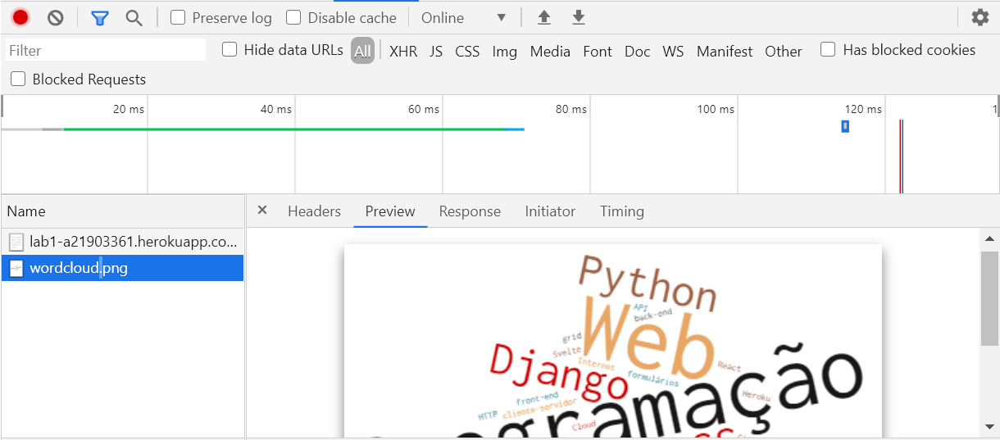
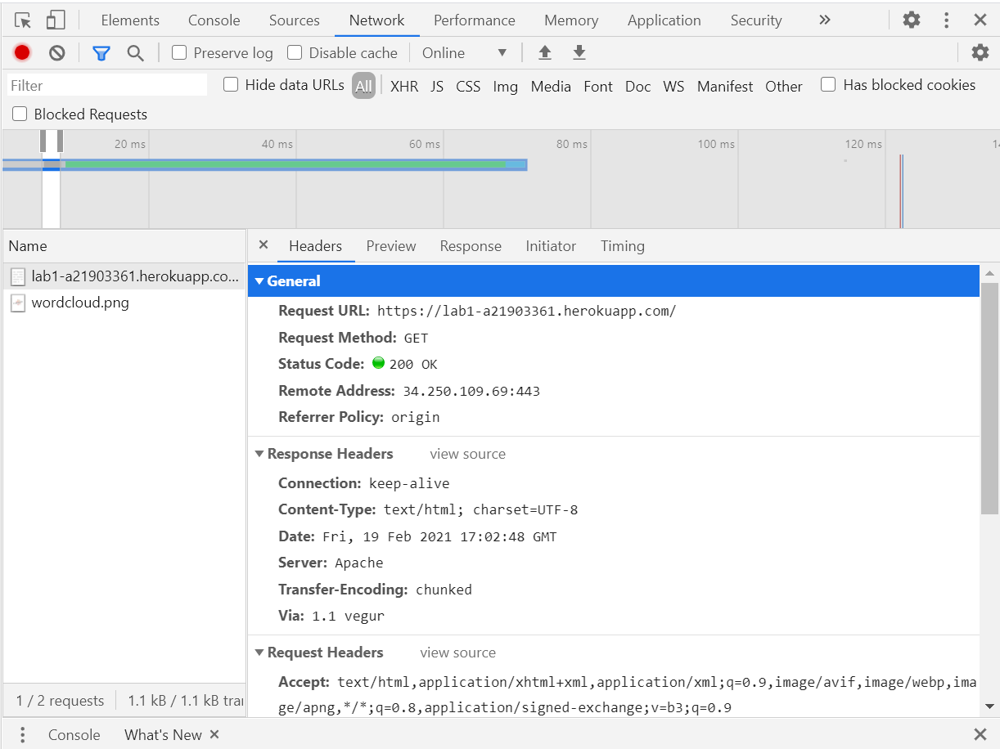
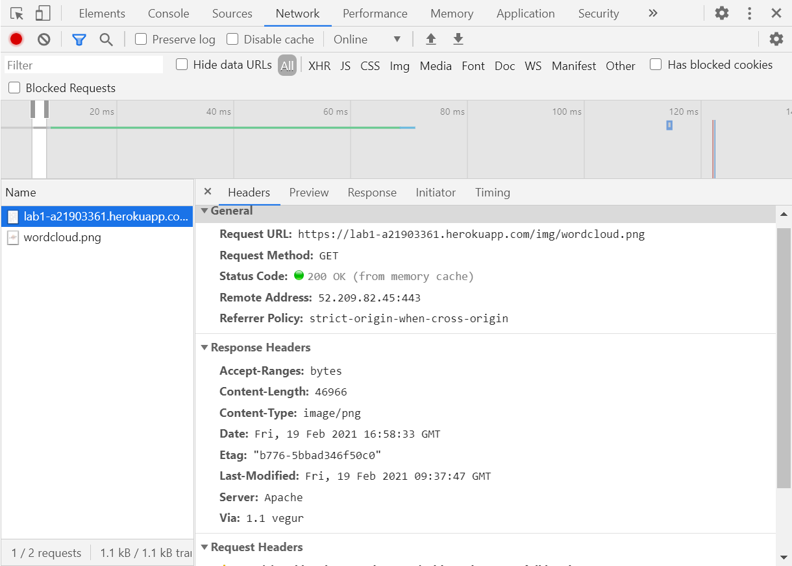
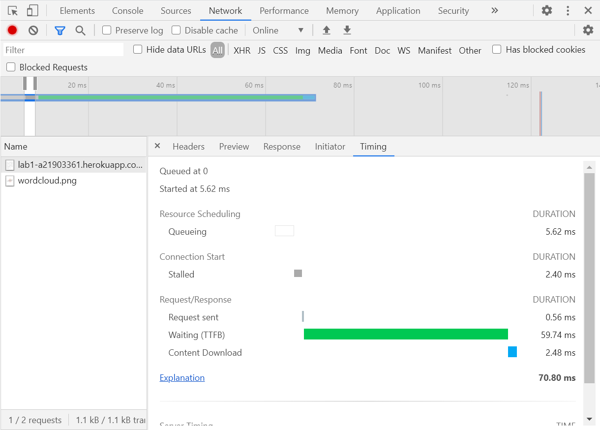
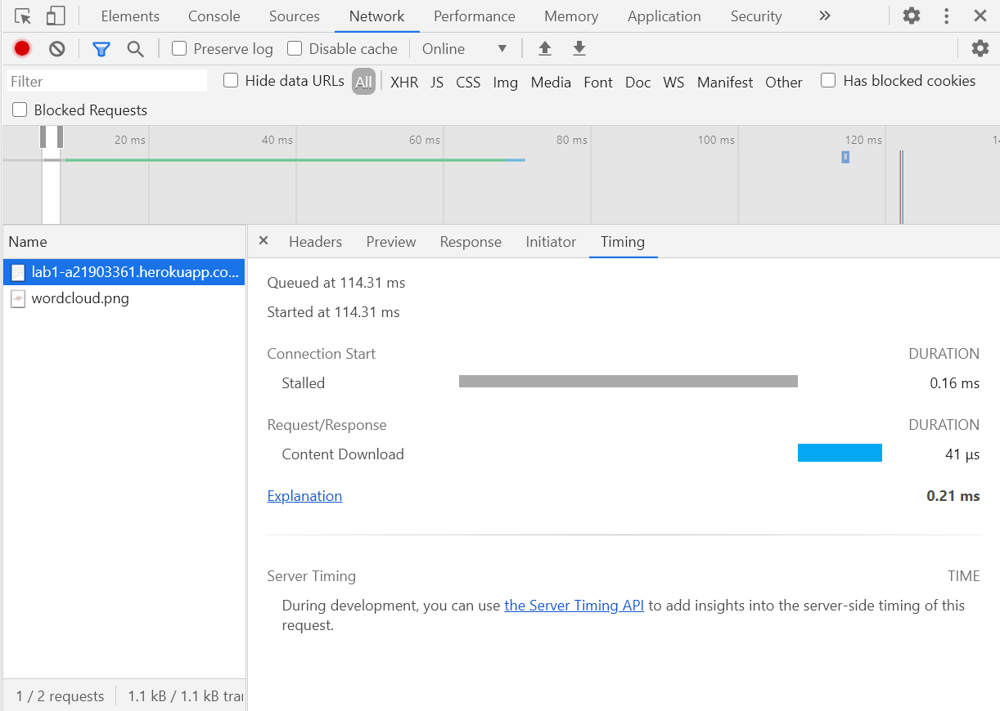

Tracking
Na primeira aula prática do semestre começamos por dar track ao nosso ip:

Depois demos track ao ip do server onde estava o nosso futuro host:

Após isso fomos descobrir o percurso entre o nosso computador e o seu host:

Inspect
Informação dos ficheiros carregados:

2 ficheiros descarregados
Tipo/Timings
- documento (wait~2.47s | download~2.81ms)
- png (wait~782.03ms | download~0.92ms)
Ficheiros selecionados (notas & imagens)
- documento (aparece apenas o texto)

- png (aparece apenas a imagem)

- documento (aparece os requests e a informação geral)

- png (aparece os requests e a informação geral)

- documento (aparece o tempo que demora a ser carregado o documento assim como o seu schedulling)

- png (aparece o tempo que demora a ser carregado o documento assim como o seu schedulling)
